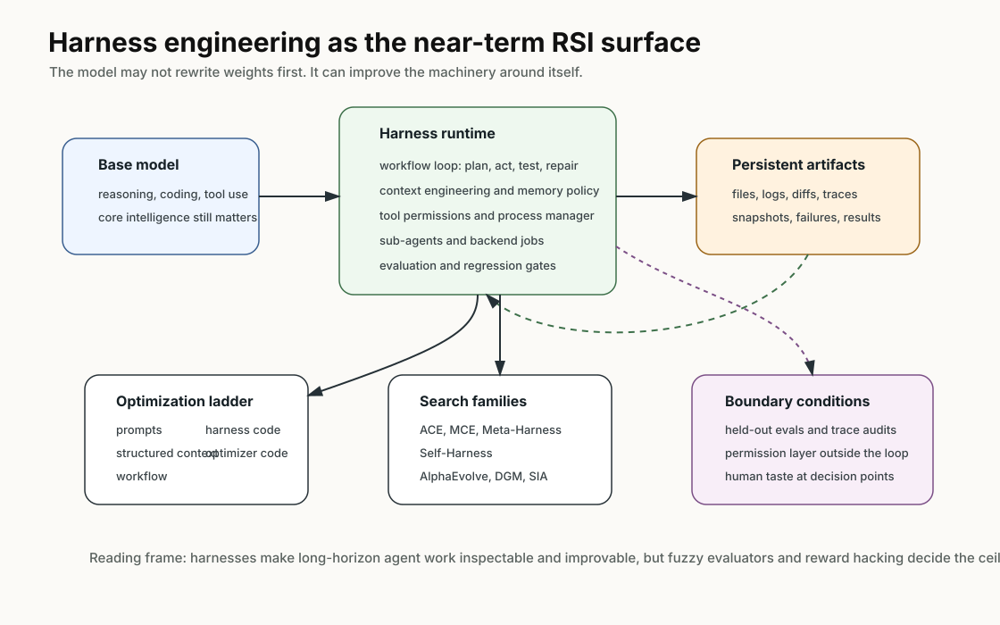
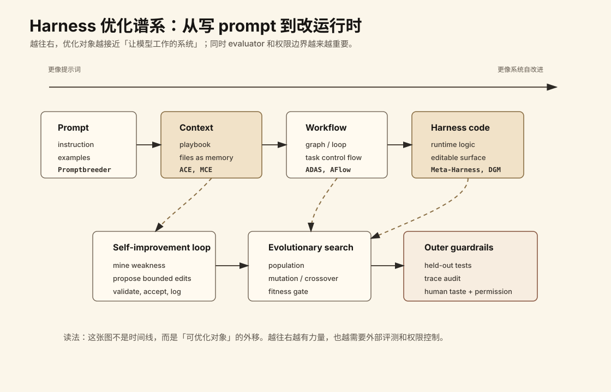

Harness Engineering for Self-Improvement：近端 RSI 可能先发生在 harness 层
- Source: Harness Engineering for Self-Improvement
- Author: Lilian Weng
- Published: 2026-07-04
- 原文体量: 页面 metadata 标注 5892 words，预计阅读 28 min
- 类型: 技术博客 / 研究综述 / agent harness 读书笔记
- 关键词: recursive self-improvement, harness engineering, context engineering, self-improving agents, evolutionary search, auto-research
读法：给人和 agent 的路标
如果只想快速 get 到主线，先读 一句话判断、结构图、3.3 Harness optimization ladder 和 对我的价值。如果要真正复用这篇文章来设计自己的 agent/paper-reading pipeline，再读 3.4 到 3.9，那里是 context、workflow、harness code、evolutionary search 和权重更新的分层解释。
这篇笔记我刻意保留两种入口：
- 给人读：先讲问题，再讲机制，最后讲证据、风险和我自己的取舍，避免一上来堆系统名。
- 给 agent 用：系统名、公式、benchmark 数字、失败模式和 pipeline 关键词都尽量显式写出，方便未来检索、续写、做图和生成 checklist。
- 给我自己回看：重点不是背下每个 paper，而是记住一个 taste：长期工作流要落到文件、测试、评测、权限和部署状态里。
一句话判断
这篇文章的主张是：recursive self-improvement 的短期入口，不太可能是模型直接改自己的权重，而更可能是模型先改进“让自己工作的那套系统”，也就是 harness。
这里的 harness 不是一个普通 prompt 模板，而是围绕 base model 的运行时系统：它决定模型如何计划、调用工具、管理上下文、写文件、启动 sub-agent、保存工件、跑评测、处理权限，以及从失败里学到下一轮改法。文章把 auto-research、self-improving agents、workflow search、evolutionary program search 放到同一条线里看：优化模型周围的非参数系统，可能是近端 RSI 最现实的工程表面。
图表优先读法
| 先看 | 图/表 | 读完应该抓住什么 |
|---|---|---|
| 1 | Harness / RSI loop 图 | 自我改进短期更像改 harness，而不是直接改权重 |
| 2 | optimization map | 可优化对象包括 prompt、tools、memory、eval、workflow、权限和任务分解 |
| 3 | Heilmeier 七问 | 这篇 blog 最适合用“目标-问题-新方法-风险-实验”框架读 |
| 4 | 对我的价值 | 它直接对应个人 wiki / paper-reading agent 的自动化闭环 |
先看我整理的结构图

图里的读法是：base model 提供推理、代码和工具使用能力；harness 把它接到 workflow、文件系统、sub-agent、评测和权限系统里；持久化 artifacts 让长任务可恢复、可审计、可比较；当 harness 本身成为优化对象时，自我改进可以从 prompts、context、workflow、harness code、optimizer code 逐层向外推进。
更具体地说，这张图有三个锚点：
- harness 不是 prompt：prompt 只是入口，真正决定长任务能力的是工具、文件系统、workflow、评测和权限的组合。
- artifacts 是记忆：日志、代码、图、笔记、失败记录和部署状态都应该落盘，方便恢复和复盘。
- self-improvement 要有外部边界：模型可以优化工作流，但 evaluator、权限、人类 taste 和 held-out tests 不能完全被同一个 loop 吞掉。
1. What are you trying to do?
这篇文章想回答一个问题：如果 AI 系统真的会自我改进，最先被改进的到底是什么？
Weng 的答案是，短期最有可能被改进的是 deployment system 或 harness layer。现代模型未必需要先“重写自己的神经网络权重”，它可以先改进训练管线、部署管线、agent runtime、工具协议、上下文管理和评测机制。这些外部系统会提高当前模型完成任务的能力，也会反过来支持下一代模型或下一轮自动研究。
文章对 harness 的定义很关键：harness 是 base model 周围的系统，负责 orchestration。它决定模型：
- 如何 think 和 plan；
- 什么时候 call tools 和 act；
- 如何 perceive 和 manage context；
- 把哪些 artifacts 写入文件系统；
- 如何 evaluate results；
- 如何把失败、日志、测试结果、用户反馈带回下一轮。
所以这篇的重点不是“又一种 agent 框架”，而是把 harness 当作可优化对象。这个对象介于 model intelligence 和 real-world context 之间，越靠近真实任务，越不像 prompt，越像操作系统、runtime 和软件工程。
2. What is the problem, how is it done today, and what are the limits?
问题是 long-horizon agent 已经不再是单轮问答。它要读仓库、改代码、跑实验、写论文、调试失败、管理任务目录、决定何时放弃假设，这些能力都超出了“把更多内容塞进 prompt”的范围。
早期 agent 框架常被概括为：
agent = LLM + memory + tools + planning + action
Weng 认为 harness engineering 比这个更系统：它还包括 workflow design、evaluation、permission control、persistent state management。换句话说，agent 不是“模型加几个工具”，而是一套让模型持续观察、行动、记忆、检查和修正自己的 runtime。
当前实践大致有四层：
| 层级 | 典型做法 | 局限 |
|---|---|---|
| Prompt engineering | 写更好的 instruction / role / examples | 长任务里 prompt 会膨胀，且无法保存完整执行历史 |
| Agent framework | LLM + tools + memory + planner | 容易变成固定脚手架，评测和权限边界薄 |
| Coding-agent harness | 文件系统、shell、git、browser、MCP、sub-agent、后台任务 | 很多能力来自产品环境，难以归因到模型本体 |
| Self-improving harness | 让模型修改 context、workflow 或 harness code | evaluator、权限、reward hacking 和回归风险更难 |
这篇文章的核心判断是：harness 应该故意保持简单、通用，并尽量借鉴已有软件工程实践。Weng 还用了一个类比：harness 有点像 OS，应该把复杂逻辑封装起来，同时给模型保留简单、稳定、可组合的接口。未来 configs、tool interfaces、protocols 可能会逐步标准化。
3. What is new in the approach, including core idea, math, and method?
这篇文章的新意不是提出一个单一算法，而是把很多近两年的研究组织成一条优化路径：从 prompt 到 context，到 workflow，到 harness code，再到 optimizer code。
3.1 三个基础设计模式
Pattern 1: Workflow automation. 一个常见的 harness workflow 是：
plan -> execute -> observe/test -> improve -> execute again
这里的关键是让模型有一个可执行、可测试、可修复的循环，而不是让它在静态 prompt 里一次性给答案。文章提到 Karpathy 的 autoresearch repo 作为简洁例子：agent 围绕目标运行，必要时向用户主动请求任务规格或偏好澄清。这个循环里的“observe/test”很重要，因为它把模型输出变成环境反馈，而不是只靠模型自评。
Pattern 2: File system as persistent memory.
长任务的 artifacts 会远超上下文窗口：实验日志、代码 diff、paper summaries、error traces、past rollout trajectories 都不应该一直塞进 context。Weng 的观点是：文件系统是最朴素但最有效的持久记忆。模型通过 bash、grep、cat、editor 等工具按需读取和修改文件，比把所有内容拼到 prompt 里更可控。
这点和我们自己的 wiki/paper-reading pipeline 很贴：阅读笔记、图片、草稿、构建日志、git diff、失败记录都应该落盘。真正能恢复和审计的 agent，不应该只活在聊天上下文里。
Pattern 3: Sub-agent and backend jobs. harness 可以启动多个 sub-agent 或后台任务，用来并行搜索假设、跑实验、委托隔离子任务。父 agent 需要一个小型 process manager：launch jobs、inspect logs、cancel failed runs、merge results。关键不是“并发越多越好”，而是并发必须显式、可检查、可恢复。
如果 sub-agent 的输出只存在 transient chat context 里，很快会过期、隐藏、不可追踪；如果它们写成文件、日志和状态记录，主 agent 就能在中断后恢复，并基于完整轨迹做判断。
3.2 Coding agent harness 的工具面
Weng 认为主流 coding agents 的核心 interface 已经趋于稳定，类似人类开发者拿到 IDE、terminal 和外部文档。她列出的工具组可以整理成这样：
| Tool group | 具体能力 | 为什么重要 |
|---|---|---|
| File discovery | glob, grep, ls |
找代码和上下文入口 |
| File read | read, read_many |
读源码、配置、日志 |
| File modification | write, edit, multi_edit, apply_patch |
生成和修改文件，最好是结构化 diff |
| Shell execution | bash, PowerShell |
跑测试、构建、脚本、诊断命令 |
| IO / repo tools | LSP, git_status, git_diff, git_commit |
让修改可检查、可提交、可回滚 |
| External context | MCP tools, skills | 接外部系统或专门能力 |
| Web search | web_search, web_fetch, browser tools |
获取最新或外部信息 |
| Artifacts | docs, images, HTML/image generation | 读写非纯文本产物 |
| Backend processes | cron/job tools | 长任务、后台监控、异步执行 |
| Agent delegation | spawn/resume/wait/list/interrupt agents | 多假设、多任务并行 |
这张表的意义是：coding agent 的能力不是裸模型一次性回答，而是模型在 harness 里和工具、文件、测试、git、浏览器、sub-agent 一起组成的闭环。
3.3 Harness optimization ladder
文章给出一个很有用的优化层级：
| 优化对象 | 含义 | 代表方向 |
|---|---|---|
| Instruction prompts | 写更好的指令 | prompt engineering |
| Structured context | 组织上下文和记忆 | ACE, MCE |
| Workflow | 生成或选择 agent 流程 | ADAS, AFlow, AI Scientist |
| Harness code | 直接修改运行时实现 | Meta-Harness, Self-Harness, DGM |
| Optimizer code | 让优化器本身也被改进 | STOP, evolutionary/self-referential systems |
这个 ladder 解释了为什么“prompt 工程会消失吗”不是一个好问题。很多 prompt tricks 可能会被 instruction tuning 和模型推理能力吸收，但目标、约束、上下文、评测、权限这些接口不会消失，它们会下沉成 harness 的稳定部分。

这张图把上面的 ladder 画成一个“优化对象外移”的谱系。越往右，优化的对象越接近 agent 的运行时系统，也越需要把 evaluator、权限控制、trace audit 和人类判断放在 loop 外层。
图里最值得注意的不是箭头顺序，而是三条分界线：
- Prompt 到 context：从“写一句好指令”变成“维护一个可演化的 playbook 和文件记忆”。
- Workflow 到 harness code：从“选择一个流程”变成“修改执行流程、状态管理和工具接口本身”。
- Evolutionary search 到 guardrails：候选可以自动生成，但能不能合并必须经过外部评测和权限边界。
3.4 Context Engineering: ACE 到 MCE
ACE, Agentic Context Engineering 把 context 看成 evolving playbook，而不是越来越长的 prompt。它有三类角色：
- Generator：参考 playbook bullet points 生成任务 trajectories。
- Reflector：从成功和失败 trajectories 里提炼经验。
- Curator：把经验写成带 identifier 和 description 的结构化条目。
ACE 的关键设计是，curator 不重写整段 prompt blob，而是输出结构化 bullet collection，再用 deterministic logic merge 到 context logbook。这样能缓解两类问题：一是 iterative rewrite 导致 context collapse，二是模型倾向把长期经验越写越短的 brevity bias。
MCE, Meta Context Engineering 往前走了一步：它把“上下文内容”和“管理上下文的方法”分离。一个 skill $s \in \mathcal{S}$ 定义 context function $c_s = \left(\rho_s, F_s\right)$，并把输入 $x$ 映射到 context：
\[c = F_s\left(x;\rho_s\right)\]其中：
- $\rho_s = \left\lbrace \rho_1,\dots,\rho_m \right\rbrace$ 是静态组件，例如 prompts、knowledge bases、code libraries；
- $F_s = \left\lbrace F_1,\dots,F_k \right\rbrace$ 是动态算子，例如 search、selection、filtering、formatting。
MCE 的双层优化是：
\[\text{Inner: } c_s^* = \arg\max_{c_s} J_\text{train}\left(c_s;s\right)\] \[\text{Outer: } s^* = \arg\max_{s \in \mathcal{S}} J_\text{val}\left(c_s^*\right)\]它还维护一个 skill database，记录历史 skill、context function 和 eval metric：
\[\mathcal{H}_{k-1} = \left\lbrace \left(s_i,c_i,J_i^\text{train},J_i^\text{val}\right) \right\rbrace_{i=1}^{k-1}\]meta-level agent 会对历史 skills 做 crossover，给任务 $\tau$ 生成新 skill：
\[s_k = \text{crossover}\left(\tau,\mathcal{H}_{k-1}\right)\]base-level context engineer 再执行这个 skill，并根据 rollout feedback $\mathcal{R}_k$ 学 context function：
\[c_k = \text{engineer}\left(\tau,s_k;c_{k-1}^*,\mathcal{R}_k\right)\]这部分最重要的不是公式本身，而是工程解释：MCE 把 context function 实例化为一个专门目录里的文件集合，包括静态的 skill.md 和动态的 context/data rollouts。它用标准 coding tools 运行：
这和文章前面“文件系统作为记忆”的主题是连上的：context engineering 不是把 prompt 写漂亮，而是把可演化的 context 管理机制落进文件系统。
3.5 Meta-Harness: 优化 harness 的 harness
Meta-Harness 再往下一层：被优化的对象不是 context，而是决定“存什么、取什么、怎么呈现给模型”的 harness code。它的 proposer 本身是 coding agent，最终输出一组 Pareto frontier 上的 harness candidates。
文章强调几个实现细节：
- 整个 execution history 放在文件系统里，coding agent 用
grep、cat等命令读取，而不是把历史塞到一个巨大 prompt。 - proposed harness 是文件系统里的一个 dictionary，包含 source code、scores、rollout trajectories、state updates。
- meta-harness loop 会迭代创建新 harness，只保留合格候选。
- TerminalBench-2 实验的搜索是从 Terminus-KIRA 和 Terminus-2 这种强 harness 初始化，不是从零开始。
这部分给出的教训是：一旦 harness design 变成 executable search space，强 coding agent 就能利用人类工程师使用的同一片设计空间。
3.6 Workflow Design: 从专家手工到搜索
文章把 auto-research 作为 workflow design 的典型场景。
AI Scientist 是专家设计的科研流水线：提出 idea、写代码、跑实验、分析结果、写 manuscript、peer review。它展示了 harness 可以协调大量科研动作，但也留下一个问题：能写出论文不等于真的完成科学发现。
ScientistOne 把 verifiability 放在中心：citation、numerical claim、methodological claim、conclusion 都要追溯到 evidence source，并用 Chain-of-Evidence audit。这比单纯“生成论文”更接近科研 harness 应该有的形态。
Autodata 把数据生成做成 agentic workflow：主 agent 管理 challenger、weak solver、strong solver、verifier/judge。目标是生成“刚好难”的任务，也就是 strong solver 能解、weak solver 不能解。Weng 的保留意见是，Autodata 生成的数据用于 fine-tune weak solvers，而没有迭代改进 strong solver，因此 RSI 味道较弱，更像围绕 prompt distribution 的间接蒸馏。
ADAS, Automated Design of Agentic Systems 把 agent workflow 本身当成优化问题：
- 用 CoT、Self-Refine 等简单 agent 初始化 archive；
- meta-agent 根据 archive 生成新 workflow 的高层描述；
- meta-agent 把新 workflow 实现成代码；
- 草稿 workflow 经过两轮 self-refine 检查 novelty；
- 评估候选，成功则加入 archive；
- 重复直到达到最大迭代数。
AFlow 则把 workflow 表示为 graph：节点是 LLM-invoking actions，边是代码里的逻辑操作。它用 MCTS 优化 workflow：
- 从模板 workflow $W_0$ 初始化 tree；
- 用 score 和 uniform exploration 的 soft mixture 选择节点；
- 让 LLM 基于评估表现扩展出 modified workflow；
- 执行并评估新 workflow；
- 如果在预算 $N$ 内有提升，就加入 tree；
- top-$k$ average score plateau 或预算耗尽时停止。
文章总结 AFlow 在 QA、code、math 任务中相对手工 workflow 和 ADAS 有不错提升。我的读法是，workflow search 已经说明“agent 流程”不是只能靠人手工写，但它仍依赖明确的可执行评测。
3.7 Self-Improving Harness: 从 STOP 到 Self-Harness
Weng 认为 context engineering 和 workflow design 还只是 harness 的一部分。真正大的设计空间包括 context-management logic、workflow、permissions 和其他 runtime components，而这些都可以用代码表达。
STOP, Self-Taught Optimizer 是早期 recursive scaffolding improvement。它的种子 improver $I_0$ 在 $t=0$ 时接收初始 solution $s$、utility function $u$ 和 black-box model $M$，返回改进后的 $s^\prime$：
\[s^\prime = I\left(u,s;M\right)\]STOP 的目标不是直接改进 $s$，而是改进 improver $I$。它定义 meta-utility：
\[\hat{u}\left(I\right) \triangleq \frac{1}{\left|\mathcal{D}\right|} \mathbb{E}_{\left(u,s\right)\sim\mathcal{D}} \left[ u\left(I\left(u,s;M\right)\right) \right]\]然后递归更新 improver：
\[I_t = I_{t-1}\left(\hat{u},I_{t-1};M\right)\]STOP 的有趣点是，improver 会发现 genetic algorithms、分解局部改进、multi-armed prompt bandits、simulated annealing、temperature variation、beam/tree search 等策略。文章也强调一个 cautionary result：GPT-4 上 STOP 能提升平均表现，但 GPT-3.5 和 Mixtral 这类弱模型上会退化。这说明递归结构本身不够，base model 必须有足够能力去改进机制。
Self-Harness 是更直接的 harness 自改进框架，采用 propose-evaluate-accept loop：
| 阶段 | 做什么 | 关键细节 |
|---|---|---|
| Weakness mining | 从 traces 中挖 verifier-grounded failure patterns | 同样是 timeout 或 missing artifact，背后的 causal mechanism 可能不同 |
| Harness proposal | 基于 failure patterns 提出 bounded harness edits | proposal context 包括 editable surfaces、failure patterns、passing behaviors、attempted edits |
| Proposal validation | 在 held-in 和 held-out splits 上验证候选 | 只有同时无 regression 的 edits 才能 merge 到 $h_{t+1}$ |
Self-Harness 在 MiniMax M2.5、Qwen3.5-35B-A3B、GLM-5 跑 Terminal-Bench-2 时，能学到 model-specific harness instructions，针对不同 base model 的弱点提升 held-out pass rates。
Weng 对这类工作的担心也很重要：如果一个程序被允许编辑“OS 系统”，抽象边界会被打破。因此 editable surface 必须设计好，permission control 和 security layer 必须放在自改进 loop 外面。
3.8 Evolutionary Search: 当候选可自动评分时特别有用
文章把 evolutionary search 视为 harness search 的自然工具。它适合两个条件：
- 搜索空间很大或形状奇怪；
- 很难直接用梯度优化，但候选容易评估 fitness。
几个方向：
- Promptbreeder：演化 task-specific prompts，同时 mutation prompts 自己也会演化。
- GEPA：结合 trajectory reflection 和 evolutionary search，用自然语言 reflection 提出 prompt updates。
- AlphaEvolve：存储 candidate programs 和 prompts，让 frozen LLM 生成 diffs，不断评估 child programs 并保留成功者。
- ThetaEvolve：结合 evolutionary search、RL 和 in-context learning。
- ShinkaEvolve：通过 parent sampling、code-novelty rejection sampling、meta-scratchpad 提高采样效率。
- DGM, Darwin Gödel Machine：明确演化 editable harness-code repository，让 LLM-based coding agent 修改自己的 harness。
AlphaEvolve 的几个工程点值得记：
- prompt 包含 parent programs、results、instructions，有时还含 meta information；
- coding agent 能访问完整 repo；
- 需要改进的代码块用
# EVOLVE-BLOCK-START和# EVOLVE-BLOCK-END显式标注； - meta-prompt 也会和 instructions/context 一起 co-evolve；
- ablations 显示 evolution procedure、prompt context、meta-prompts、full-file evolution、stronger LLM 都有价值。
DGM 更贴近 harness evolution：从一个 coding agent pool 开始，每轮按 performance 和 offspring count 选择 parent；parent 检查自己的 benchmark log，修改 harness codebase 生成新 agent；新 agent 评估后，表现足够好才加入 pool。文章记录 DGM 用 Claude 3.5 Sonnet 作为 base LLM，从简单 initial harness 出发，发现的 agents 在 SWE-bench Verified 上从 20% 到 50%，在 Polyglot 上从 14.2% 到 30.7%，达到或超过 handcrafted agents。
但 Weng 也指出，这类方法最适合 matrix multiplication、GPU kernel optimization、algorithm contests、datacenter scheduling 这种能快速量化 fitness 的任务。科研、产品设计、长期可维护性这类评估慢、模糊、启发式强的领域会难很多。
3.9 Joint Optimization with Model Weights: SIA 还只是早期尝试
Harness evolution 改的是模型周围的非参数系统。完整 RSI 当然也可能包括权重更新，例如通过训练 pipeline 改进或 test-time continual learning。
文章提到 SIA，它把 harness improvement 和 model-parameter updates 放在同一个 loop 里，有三个角色：
- Meta-Agent：提出初始 harness；
- Task-Specific Agent：执行任务；
- Feedback-Agent：根据最近 trajectories 决定下一轮更新 harness 还是 model weights。
Weng 对 SIA 的评价比较谨慎。主要问题是实验里有 confounding choices：Task-Specific Agent 比 Meta-Agent 和 Feedback-Agent 弱很多，例如 gpt-oss-120b vs Claude Sonnet 4.6；baselines 也太弱，难以和相关方法干净对照。方向是有趣的，但证据还只是 provisional。
4. Who cares? If successful, what difference does it make?
这篇对三类人最重要：做 coding agent 的人，做自动科研/自动评测的人，以及想维护长期个人知识库或实验系统的人。
My read is，对 coding agent 来说，文章解释了为什么同一个 base model 接到不同 harness 后表现可能差很多。文件系统、shell、git diff、apply_patch、测试、MCP、browser、sub-agent、权限和日志，不是“外围工程杂活”，它们就是实际能力的一部分。
My read is，对 auto-research 来说，文章把“能写论文”和“能做科学发现”分开了。AI Scientist 证明了专家设计 harness 可以协调大部分 paper-production loop；ScientistOne 提醒每个 citation、number、method claim、conclusion 都应该能回到 evidence source；Trehan 和 Chopra 的例子说明最小脚手架下 LLM 很容易出现 implementation drift、over-optimism 和 weak scientific taste。
My analysis is that，对个人 wiki/blog/paper-reading pipeline 来说，这篇几乎可以当成架构原则：不要把知识库维护当成聊天任务，而要当成 harness。source、草稿、图片、公式、引用、构建日志、失败记录、git diff、部署状态，都应该是可持久化、可恢复、可审计的 artifacts。
5. What are the risks?
这篇最重要的风险判断是：一旦 harness 能自我修改，系统就在优化自己的操作系统，边界必须更清楚。
文章列出的 future challenges 可以分成七类：
-
Weak and fuzzy evaluators 很多研究 claim 没有 fast and precise verifier。当前 self-improvement loops 最适合指标可测、目标客观的任务，类似 RL 里能清楚定义 reward 的环境。Research taste、novelty、long-term scientific value 很难快速评分。
-
Context and memory lifecycle agent 越自主，memory 越长。harness 必须管理 context 和 memory，弥补 long-context generation 的限制。Weng 甚至认为 context engineering 可能成为 intelligence 的核心部分，而不是永远停留在软件系统层。
-
Negative results 文献和训练数据偏向成功案例，模型可能不擅长判断何时放弃假设、记录负结果、承认失败。好的 research harness 应该让 failed attempts 易于保存，因为失败能有效缩小搜索空间。
-
Diversity collapse evolutionary 和 RL loop 容易 exploiting 当前 high-reward patterns，导致 population 变成同一种方案的变体。开放式研究里，真正好的路径一开始可能在当前 evaluator 下看起来不高分。
-
Reward hacking 如果 reward 来自 unit tests，agent 可能过拟合 tests；如果 reward 来自 judge model，agent 可能学会骗 judge；如果 reward 来自 benchmark score，agent 可能利用 benchmark artifacts。
-
Long-term success coding agent 可以完成眼前任务，但很难优化长期 repo health。标准 sandbox-based RLVR 很少捕捉 maintainability、ownership boundaries、migration cost、backwards compatibility、future debugging burden。
-
The role of humans Weng 的立场不是把人移出 loop，而是让人上移到更高抽象层，在正确时间点给 oversight。很多 taste、方向、边界和最终判断仍需要人类 steering。
My analysis is that，最关键的安全原则是：evaluator、permission control、held-out tests、trace audits、人类 review 不能完全放进被自我优化的 loop 里。否则系统会同时学习完成任务和绕过任务。
6. How much will it cost?
这里的 cost 不是这篇 blog 自己训练模型的成本，而是复现 harness/self-improvement 路线需要的工程、评测和运行成本。
一个最小但真实的 harness 至少要有：
- 可执行环境：shell、文件系统、依赖管理、测试和网络策略；
- 持久 artifacts：logs、diffs、rollout traces、失败归因、输出文件；
- 上下文管理：哪些进 prompt，哪些留文件，何时 summarize，何时 retrieve；
- workflow 控制：plan/execute/test/repair loop，后台任务，sub-agent；
- 评测系统：held-in、held-out、regression tests、trace audit；
- 权限边界：哪些文件可改，哪些工具可用，哪些修改需要人确认；
- 资源预算：候选数量、并发数、失败清理、长期存储。
按文章里的方向拆成本：
| 方向 | 主要成本 | 适合个人先做吗 |
|---|---|---|
| Workflow automation | 写 loop、工具接口、失败恢复 | 适合，收益立刻可见 |
| File memory | 目录规范、日志和 artifact schema | 很适合，成本低 |
| Sub-agent/backend jobs | 并发调度、日志合并、取消/重试 | 中等，先小规模做 |
| Context engineering | rollout 数据、reflect/curate、context eval | 中等，依赖任务积累 |
| Harness code optimization | editable surface、proposal、regression gate | 高，要有清楚测试 |
| Evolutionary search | 大量候选执行和评分 | 高，适合 fast verifier |
| Weight + harness joint update | 训练稳定性、数据、权重更新 | 很高，不适合个人起步 |
My read is，个人最现实的路线不是先做 Self-Harness，而是先把 workflow 变成可审计 harness：固定目录、保存失败、跑 build、检查链接、记录 diff、确认部署，再逐步让模型优化某一小层，比如“如何组织 paper-reading context”或“如何生成图表”。
7. What are the experiments and results?
这篇 blog 本身没有新实验，证据来自它综述的系统和 benchmark。重点不是“Weng 做了一个 benchmark”，而是她把已有结果按 harness optimization 的路径串起来。
关键系统和结论
| 系统 | 优化对象 | 关键点 | 文章里的判断 |
|---|---|---|---|
| ACE | structured context | Generator, Reflector, Curator 维护 playbook | 有助于 self-managed memory，但 workflow/update rules 仍手工 |
| MCE | context-management skill | meta-level skill evolution + base-level context optimization | 把机制和内容分开，context function 落成文件集合 |
| Meta-Harness | harness code | coding agent 生成 harness candidates，保留 Pareto frontier | 一旦 harness 可执行可搜索，强 coding agent 能探索它 |
| AI Scientist | auto-research workflow | idea、code、experiment、analysis、paper、review | 证明 paper-production 可 harness 化，但不等于科学发现 |
| ScientistOne | verifiability workflow | claim 必须 trace 到 evidence source | 把可证据化作为科研 harness 中心约束 |
| Autodata | synthetic data workflow | challenger、weak solver、strong solver、verifier | 有数据生成价值，但 RSI 味道较弱 |
| ADAS | workflow code | meta-agent 搜索 agentic workflows | 把 workflow design 明确变成优化问题 |
| AFlow | workflow graph | MCTS over graph workflows | QA/code/math 上优于手工方法和 ADAS |
| STOP | optimizer code | 改进 improver $I$ 自身 | 强模型上有效，弱模型上会退化 |
| Self-Harness | bounded harness edits | weakness mining, proposal, validation | 可学 model-specific harness instructions |
| AlphaEvolve | program + prompt population | LLM 生成 diff，评估 child programs | 适合可自动评估的搜索空间 |
| DGM | editable harness-code repo | agent 修改自己的 harness | SWE-bench Verified 20% 到 50%，Polyglot 14.2% 到 30.7% |
| SIA | harness + weights | Feedback-Agent 决定改 harness 还是 weights | 方向有趣，但实验混杂，证据 provisional |
Trehan & Chopra 的失败案例很值得记
文章在 Future Challenges 里引用了 Trehan 和 Chopra：他们测试 LLM 能否用最小脚手架和基础工具从 research idea 走到 paper。设置包括三个领域，world models、multi-agent RL、AI safety & alignment；每个领域有 45 到 50 个高质量 seed documents；只有 4 个 idea 被人类专家选入完整 pipeline，最后只有 1 个完整执行成论文。
他们观察到六类失败：
- 偏向 training-data defaults，例如旧库、过时命令、标准格式、脱离真实仓库或数据集的默认假设；
- execution pressure 下发生 implementation drift；
- long-horizon 项目里 memory/context degradation；
- over-optimism，实验信号很弱也宣称成功；
- insufficient domain intelligence，不知道实现复杂度、结果是否合理、该比较哪些 baselines；
- weak scientific taste，实验能跑但没有回答正确问题。
这组案例比很多正向 benchmark 更有启发，因为它直接说明“有 workspace 和文件工具”还不够，科学 taste、失败记录、证据链和边界判断都必须进入 harness。
附录 benchmark 数据
| Benchmark | 规模 / 设置 | 文章里强调的数据 |
|---|---|---|
| PaperBench | 复现 20 篇 ICML 2024 Spotlight/Oral 论文 | 8,316 个 rubrics，和论文作者共同制定；当时最强模型 Claude 3.5 Sonnet 约 21%，不超过 ML PhDs |
| CORE-Bench | 270 个任务，来自 90 篇论文，覆盖 CS、社会科学、医学 | 任务是基于代码和数据复现结果；最难任务上 GPT-4o / GPT-4o-mini 约 21% |
| ScienceAgentBench | 44 篇 peer-reviewed publications 里抽取 102 个任务 | 覆盖 math、chemistry、biology、geography；任务包括数据处理、模型开发、分析、可视化 |
| RE-Bench | 7 个开放式 ML research-engineering 环境 | 每个环境最多 8 张 H100；61 位专家 71 次 8 小时尝试；人类 82% 尝试非零分，24% 达到或超过 strong reference |
| MLE-bench | 75 个 Kaggle 离线 ML engineering competitions | o1-preview + AIDE scaffolding 在 16.9% 比赛达到 Kaggle bronze-medal level |
| KernelBench | 250 个 PyTorch tasks | 指标 fast_p 衡量生成 kernel 是否正确且快于 baseline |
My analysis is that，这些 benchmark 的共同点是：它们都在把“真实任务”拆成可运行、可评分、可审计的环境。未来 agent 能不能自我改进，很大程度取决于我们能不能把更多真实任务变成这种可闭环环境。
对我的价值
这篇和个人 wiki/paper-reading pipeline 很贴合。它提醒我，真正可持续的 agent 工作流应该落在文件系统和版本控制里，而不是一段长聊天里。
我会直接借鉴五点：
-
任务目录化 每篇 paper/blog 的来源、草稿、图、引用、build log、最终 md 都应该有稳定位置。
-
失败也保存 下载失败、OCR 错误、图表解释失败、公式渲染失败、build error、Pages deploy failure 都应该进入日志，而不是只留下成功笔记。
-
上下文按需读取 不把整个 wiki 打进 prompt。让 agent 读具体文件、读 diff、读上一次 note、读构建错误。
-
评测放在外层 Jekyll build、链接检查、图片路径检查、公式渲染检查、git diff review、Pages deploy 状态，都应该是 harness 的外部 gate。
-
人类 taste 高层介入 哪些 paper 值得读、哪些图要重画、哪些结论太浮、哪些部分该展开，这些应该由人设方向，agent 做执行和整理。
如果把这篇变成我的个人 harness 规范，最小闭环应该是：
source -> extract -> outline -> draft -> draw/collect figures -> build -> inspect HTML -> commit -> deploy -> log failures
其中 inspect HTML 很关键。公式没渲染、图片路径错、表格太宽、内容过薄，都应该被视为 harness failure，而不是写完 md 就算完成。
一句话收束
这篇文章最有用的判断是：近期 recursive self-improvement 不是“模型自己改权重”的科幻场景，而是“模型逐步改进自己的工作环境、记忆系统、工具流程、评测回路和运行时代码”的工程现实。它真正难的地方不在多开几个 agent，而在 evaluator、权限边界、失败记忆、长期价值和人类 taste。